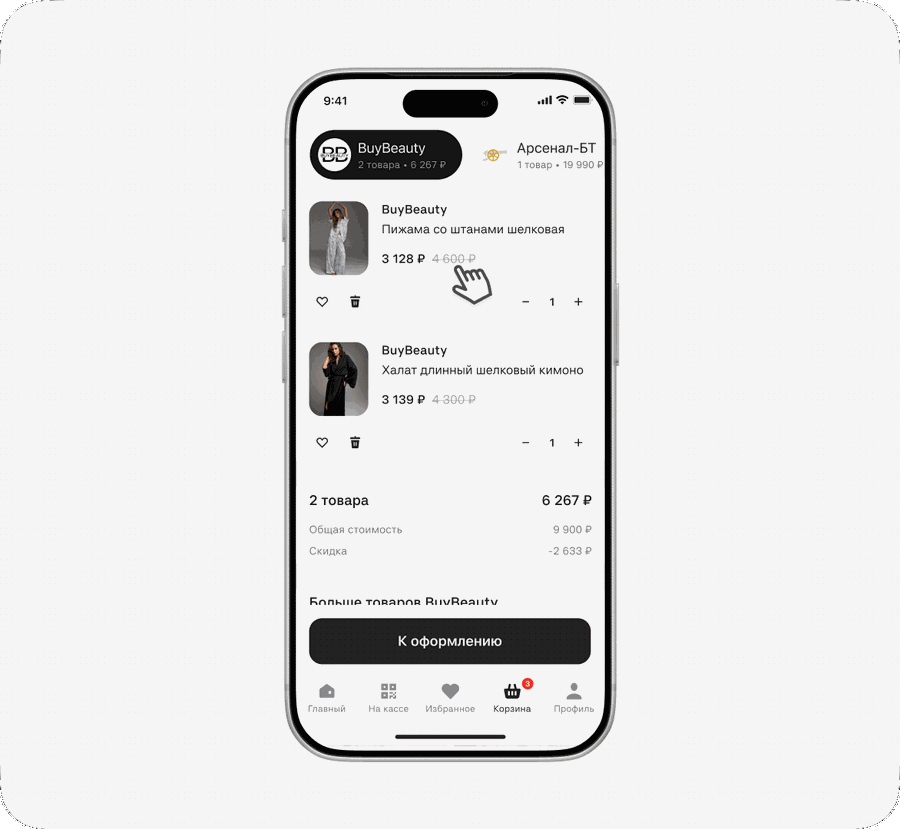
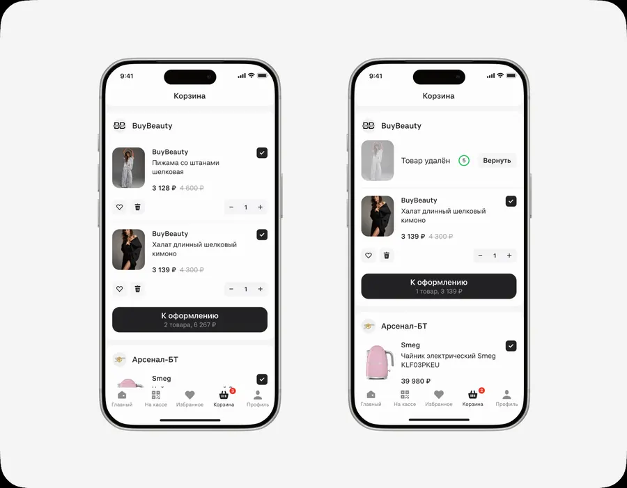

Сценарий покупки — Альфа-Маркет
С нуля спроектировала сценарий покупки внутри приложения «Подели»: от добавления товаров разных продавцов в корзину до оформления и управления заказами. Новый сценарий позволил продукту перейти от clickout-модели к полноценному маркетплейсу с комиссией от завершённых заказов.
Контекст
Альфа-Банк — крупнейший частный банк России, развивающий собственную цифровую экосистему: платежи, рассрочку, путешествия и другие сервисы. В стратегии банка была цель занять место на рынке e-commerce, чтобы диверсифицировать источники дохода. Поскольку food-сегмент в экосистеме Альфа-Групп уже представлен X5 Group, новый маркетплейс сфокусировали на одежде, технике, косметике и товарах для дома.

В 2025 году в банке уже создали B2B-направление для продавцов: управление крупными маркетплейсами (Wildberries, Ozon, Lamoda и др.) в одном кабинете и создание собственного интернет-магазина. Под эту экосистему появился независимый маркетплейс «Альфа-Маркет», который позволял продавцам избежать больших комиссий сторонних площадок.
Бизнес-задача
В банке уже существовал продукт «Подели», работавший по модели clickout: пользователь находил товар в приложении, но завершал покупку на сайте партнёра. Бизнес решил превратить «Подели» в полноценный маркетплейс и изменить модель монетизации — перейти от оплаты за переходы к комиссии с завершённых заказов. Маркетплейс также должен был стать доступен в WebView приложения Альфа-Банка.
Общее УТП двух каналов — возможность купить товар в рассрочку без переплаты и получить кешбэк по программе лояльности Альфа-Банка. Для запуска покупки внутри приложения требовалось с нуля спроектировать сценарии оформления и управления заказами — за это направление отвечала я.
Пользователи и ограничения
Аудитория «Подели» — женщины 25–45 лет, регулярно покупающие на маркетплейсах. Аналитика выявила три сегмента: Shopper — 55% (выбирают и покупают товары), BNPL — 34% (управляют рассрочкой и платежами), Mixed — 11% (совмещают оба сценария). Корзина создавалась прежде всего для шопперов, но не должна была нарушать привычные BNPL-сценарии.
Аудитория Альфа-Банка уже была хорошо знакома с механикой кешбэка и ожидала прозрачных условий получения выгоды. В WebView мы делали акцент на скидке и возможности совершить выгодную покупку внутри привычного банковского приложения.
Чтобы сократить time to market, MVP и целевую версию я проектировала параллельно. Главное техническое ограничение на раннем этапе — товары разных продавцов нельзя было оформить одним заказом.
Исследование до редизайна
Провела интервью с 11 респондентами (6 человек 25–34 лет, 5 человек 35–45 лет), основной маркетплейс которых — Wildberries (5), Ozon (4) или Яндекс Маркет (2). Все регулярно покупают онлайн, живут в городах разного размера и не работают в Альфа-Банке.
Исследование выявило две проблемы приложения «Подели» с высоким приоритетом:
- Неясный CTA на странице товара — кнопка «Смотреть в магазине» воспринималась как рекламная ссылка, а не продолжение покупки. Пользователи ожидали привычное действие — «Купить» или «В корзину» — поэтому переход к партнёру вызывал сомнения и прерывал сценарий.
- Хрупкий переход к партнёру — перед переходом на сайт магазина пользователи боялись потерять выбранный товар, цену, вариант, кешбэк или возможность оплаты частями.

JTBD: когда я хочу что-то купить на маркетплейсе, я хочу получить самые выгодные условия, чтобы чувствовать уверенность, что сделала правильный выбор.
Для роста заказов, GMV и комиссионного дохода требовалась собственная корзина — это совпадало с целями Альфа-Банка по созданию маркетплейса. Главным ограничением было то, что товары разных продавцов нельзя оформить одним заказом: нужно было спроектировать мультиселлерную корзину, которая понятно разделяет покупки по магазинам и ведёт пользователя через несколько оформлений, не снижая конверсию.
CJM и анализ конкурентов
На основе исследования, рекомендаций NN/g и технических ограничений собрала целевой путь покупки. CJM помогла рассмотреть корзину не как отдельный экран, а как связующий этап между выбором товара и оформлением заказов у разных продавцов — карта систематизировала барьеры, которые предстояло учесть в дизайне и проверить на UX-тестировании.

Чтобы сделать корзину интуитивно понятной, изучила привычные пользователям паттерны маркетплейсов: Ozon, Wildberries, Яндекс Маркет, US Mall, ASOS, Lamoda, Самокат, Лента, Золотое Яблоко, Авито, Flowwow, AliExpress, Яндекс Еда и Shop от Shopify — сравнила добавление товара, структуру корзины, переход к оформлению, работу без авторизации и пограничные случаи. Подходящие сценарии с раздельным оформлением нашлись в Яндекс Еде (заказы разделялись табами) и Shop от Shopify (товары на одном экране, отдельные кнопки для каждого продавца).

Варианты решений
Из-за технического ограничения товары каждого продавца оформлялись отдельным заказом. На этапе скетчей проработала два варианта мультиселлерной корзины.

Вариант 1 — табы. Товары каждого продавца — в отдельном табе, переключение между магазинами, одна кнопка оформления на таб.

- + Дополнительные продажи с блока рекомендаций товаров
- + Одна целевая кнопка для оформления
- − При большом количестве продавцов навигация усложняется
- − Нет уверенности, что пользователь заметит табы
Вариант 2 — единый список. Товары сгруппированы в вертикальные блоки по продавцам, для каждого магазина — отдельная кнопка оформления.
- + Вся корзина доступна в одном списке
- + Отдельные CTA объясняют механику нескольких заказов
- − Повторяющиеся кнопки могут создавать визуальный шум
- − Нет рекомендаций товаров от магазинов
UX-тестирование и выбор варианта
Провели модерируемое UX-тестирование двух вариантов: участникам предлагалось собрать корзину и оформить заказ, концепции с табами и с единой страницей показывались в разной последовательности. Наблюдали, насколько легко пользователи находят товары, меняют их количество, понимают разделение по продавцам и переходят к оформлению.
100% участников сравнительного теста предпочли единый список — в табах товары оставались незаметными, а переключение усложняло понимание корзины. Дополнительно выяснилось, что пользователям важно выбирать товары для частичного оформления, так как большинство использует корзину как избранное. В итоге отказались от табов и добавили выбор товаров галочками.
| Критерий | Табы | Единый список |
|---|---|---|
| Видимость корзины | Виден только активный таб | Все товары видны сразу |
| Риск потерять товар | Товар потеряли трое участников | Проблема не возникла |
| Понимание раздельного оформления | Чаще после подсказки | Без подсказки |
| Навигационная нагрузка | Переключение между вкладками | Достаточно одного скролла |
| Предпочтение участников | Не выбрал никто | 100% выбрали этот вариант |
Детали интерфейса
В карточке товара предусмотрела переходы к товару и продавцу, отображение цены за единицу при изменении количества и предупреждение о заканчивающихся товарах. Для пустой корзины спроектировала продолжение сценария — возврат к покупкам или персональные рекомендации, — чтобы экран не становился тупиковой точкой.

Удаление товаров. Для быстрых действий добавила свайп — привычный мобильный жест. Чтобы пользователь мог исправить случайное удаление, рассмотрела три решения: кнопку «Вернуть» с таймером, снэкбар с «Отменить» и модальное подтверждение. Выбрала кнопку «Вернуть» с обратным отсчётом — она не замедляет намеренное удаление, остаётся заметной в контексте товара и даёт предсказуемый способ исправить ошибку.

Покупки и платежи в одном разделе. Раньше в разделе «Покупки» отображались только заказы в рассрочку. С запуском маркетплейса нужно было добавить доставки и сохранить привычный сценарий контроля платежей. Вместо разделения на «Заказы» и «Платежи» — что усложняло бы навигацию — объединила доставки и платежи внутри «Покупок»: доставки в горизонтальном скролле над платежами, чтобы пользователь сразу видел статусы заказов, не перекрывая информацию о ближайших списаниях.

Результаты и выводы
Сценарии покупки и управления заказами разработаны и запущены. После запуска ещё не накопилось статистически значимого объёма данных, но сокращение пути и отказ от WebView должны снизить потери после основного CTA: меньше потерь → выше конверсия → больше заказов → рост GMV → вместе с ростом take rate растёт доход.
Что получилось
- Нашла подходящую структуру корзины — UX-тестирование показало, что единый список понятнее табов.
- Учла реальное поведение пользователей — добавила частичный выбор товаров для оформления.
Что осталось за рамками MVP
- Единый чекаут для разных продавцов — из-за технических ограничений каждый заказ оформлялся отдельно.
- Часть целевого сценария — ради сокращения time to market часть улучшений осталась в бэклоге.
Что возьму в следующие проекты
- Проверять информационную архитектуру на реальном контенте — привычный паттерн может не подойти другому контексту.
- Раньше синхронизироваться с разработкой по техническим ограничениям и сразу разделять MVP и целевой сценарий.